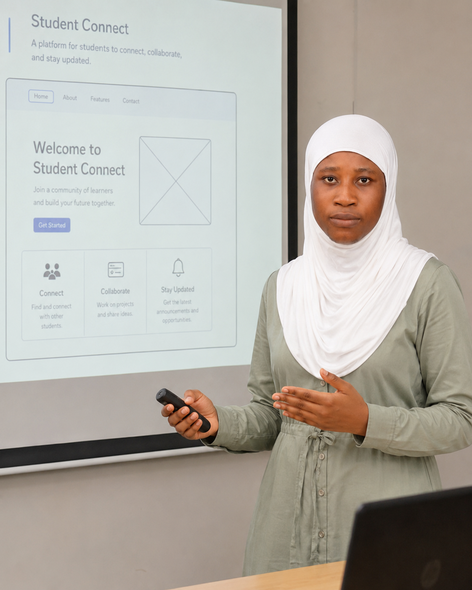

Campus Course Companion
A revision notes website that organises summaries, key definitions and past questions for first-year courses. Built as a multi-page static site, it taught me how to structure semantic HTML and share one stylesheet across many pages.